短剧与电影
仙侠漫剧 · 星河之上的对决
从人物定妆、场景设定到分镜出图与成片剪辑，一句故事梗概交给漫剧总监接着做。
把 Codex / Claude Code / Devin 多内核对话与全套媒体创作台装进一个桌面软件。漫剧、超级导演、制图、音乐、无限画布、百宝箱全内置，打字或直接开口说都行；登录账号或接入任意 OpenAI / new-api 兼容站点即可开工。
Windows 下载Windows 10 / 11（64 位）· macOS 13 及以上 · 全部版本与校验值 · 全部版本与校验值 · 让 Agent 帮我装
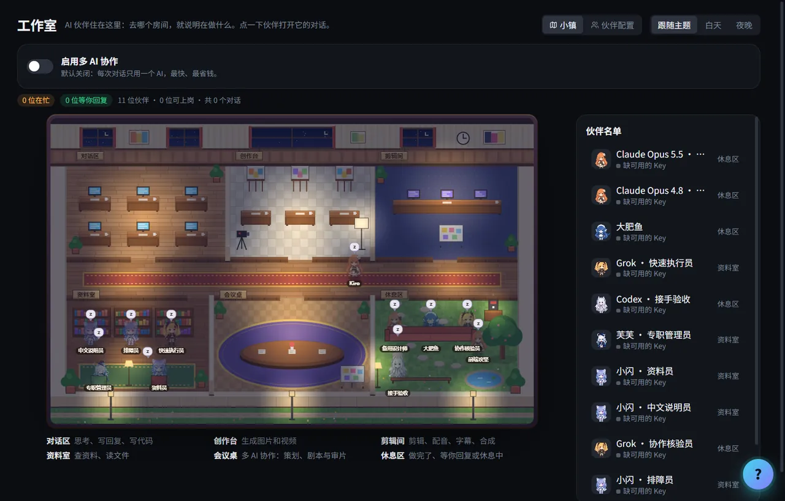

30 件用软件做出来的真实作品：短剧、广告、MV、混剪、课件、本机后期，还有本地显卡实测样片。每张卡片都能复制同款的一句话需求，粘贴进软件就能照着做。
从人物定妆、场景设定到分镜出图与成片剪辑，一句故事梗概交给漫剧总监接着做。
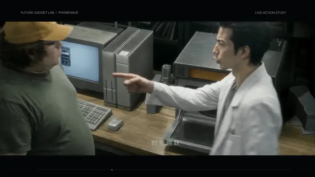
短剧与电影老式实验室、两个人、一台旧电脑：电影感布光与镜头调度的真人风格短片。
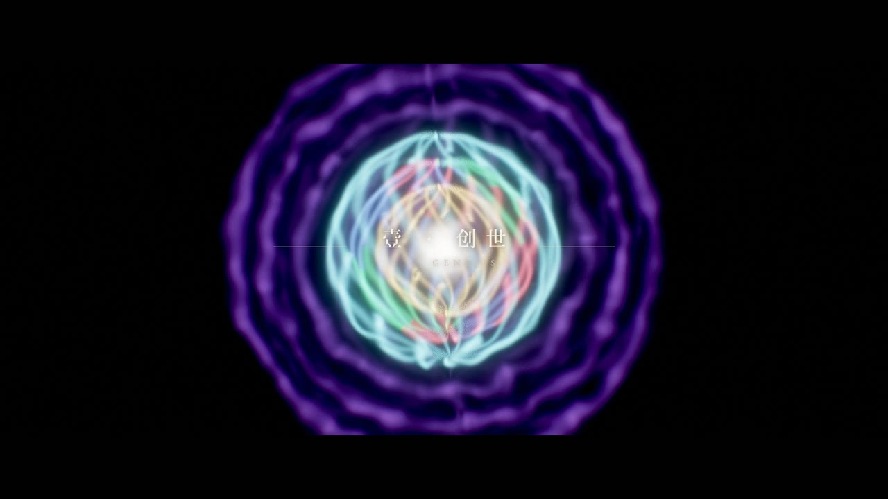
短剧与电影同生于一道波的「峰」与「谷」的故事，2.39:1 宽银幕；片中每一帧画面、每一个音符均由代码生成。
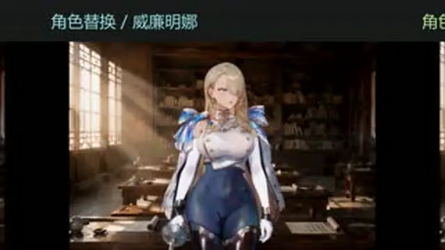
短剧与电影保留原镜头的场景与光影，把画面里的角色换成你指定的人物。
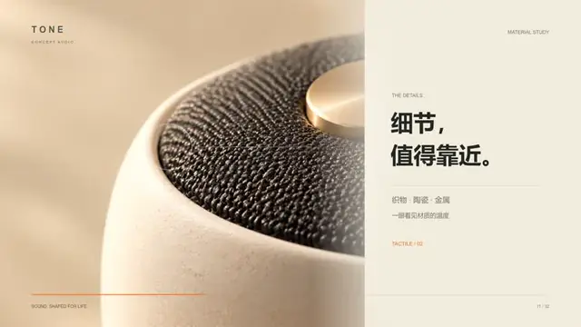
商业与MV虚构桌面音箱的材质特写广告：织物、陶瓷、金属，文案与版式一并完成。
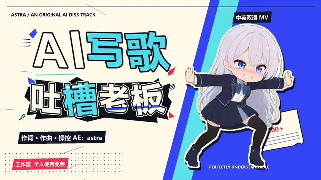
商业与MV从写歌词、原创音乐到 MV 成片，中英双语，大字幕跟着节奏走。
选素材换背景、让产品动起来、一句文案配一段音乐，每一步都能照着做。
多组提示词并发出图：校园、祭典、泳池、乐队……统一画风一次出齐。
跟着音乐节拍卡点、调色、加转场的动漫混剪。
抠像贴纸、大号花字、重复卡点，把经典梗片段剪出节奏。
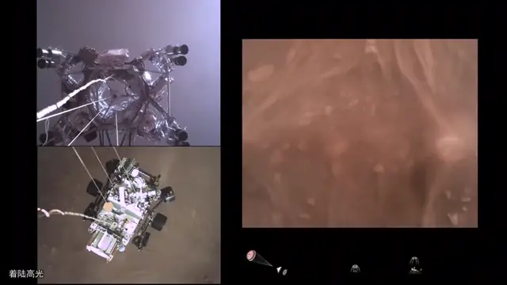
剪辑与特效从多段素材里挑出关键时刻，分屏排版并配上说明字幕。
把零散的旅拍素材剪成有节奏的蒙太奇，配乐和字幕一起加好。
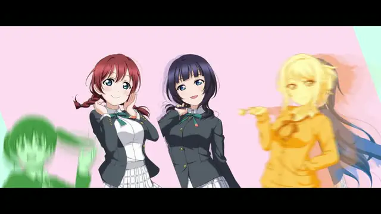
剪辑与特效关键帧编排、多层合成、镜头与转场，角色立绘跟着音乐动起来。
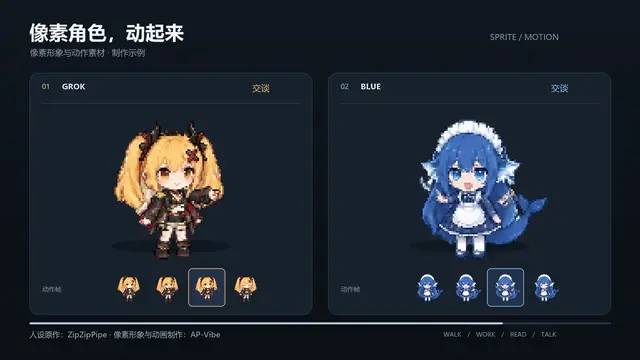
剪辑与特效把角色做成像素形象，并生成行走、工作、阅读、交谈等动作帧。
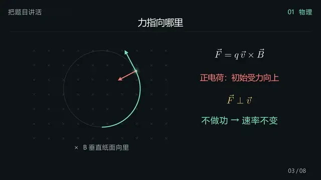
教学与课件洛伦兹力的方向一步步画出来：公式、受力箭头与轨迹同步出现。
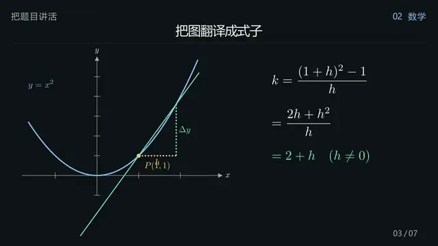
教学与课件从割线到切线：y = x² 在 P(1,1) 处的斜率推导，图形和算式逐步对应。
给古诗词配上贴合意境的画面，适合语文课导入。
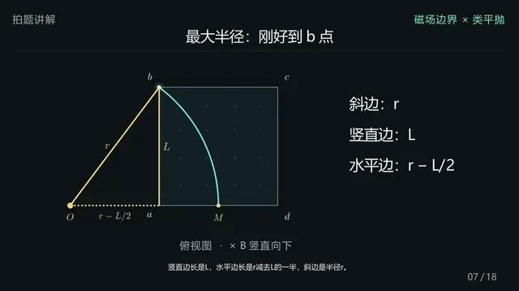
教学与课件把一道题变成分步讲解：辅助线、几何关系、结论逐步出现。
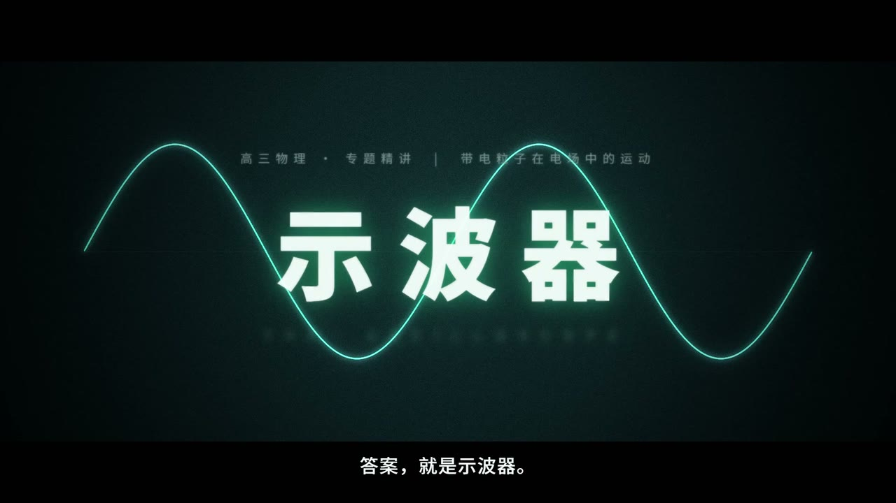
教学与课件示波管结构、加速与偏转、扫描电压、波形合成与李萨如图形，再加三道典型题和一图总结；中文配音，字幕烧录。
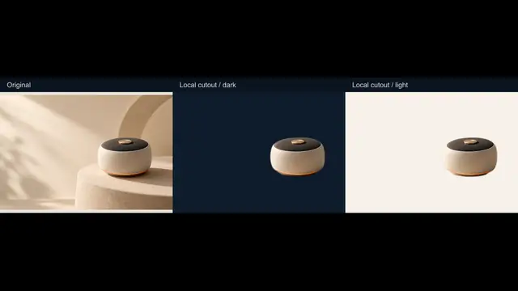
本机零费后期在本机抠出产品主体，深色、浅色背景随手换。
找出天空区域并替换，建筑边缘和整体色调一起匹配。
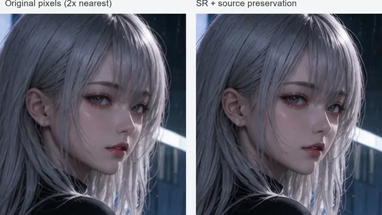
本机零费后期低清图放大 2 倍，发丝与五官保持原貌，左右对照一目了然。
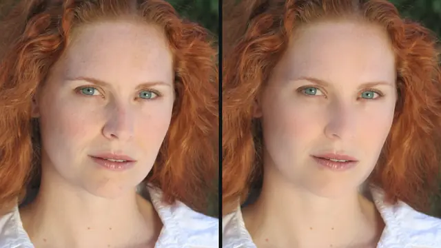
本机零费后期肤色与瑕疵轻度修饰，保留皮肤纹理，前后对照。
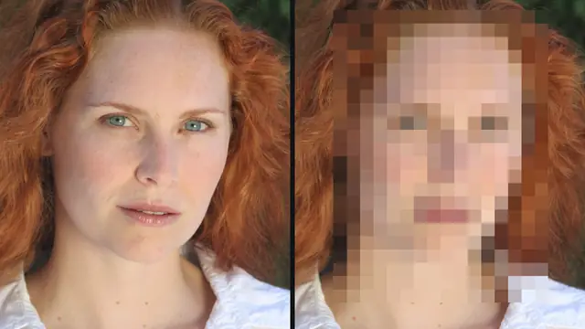
本机零费后期定位人脸并打码，适合街拍和截图分享前处理。
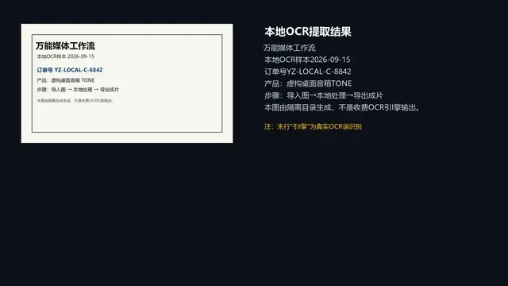
本机零费后期在本机把图片里的文字提取成可复制的文本，不调用收费识别接口。
用来核对近景表情变化，标记为「需审片」。
伸手、握瓶、抬起的顺序大体可辨；标签和手指仍要人工核对。
侧步到抬手的顺序可作预演；长舞和复杂手部未证明。
适合做过渡层；稳定运镜和雨势细节仍未证明。
可尝试用叠加模式合成；原片没有 alpha 通道。
本地显卡实测说明：MiniMax H3 Turbo8 · Windows + RTX 2070 SUPER（8 GiB）本地输出 · 832×480 · 24fps · 每段 4.46 秒无声。这是同一台机器上的本地解码结果，仍需按正常速度审片；不代表成功率、复杂动作或完整 MV 质量。
复制到的是可以直接粘贴的示例需求；实际成片取决于你的素材和所选模型。含第三方素材的混剪仅作剪辑能力演示。
千面不只是换颜色，而是换一整套布局和操作方式。按 F2 随时切换，对话、连接和作品全部共用。0.7.0 新增第 10 套「二次元·痛窗」，立绘和布局可以自己定制。
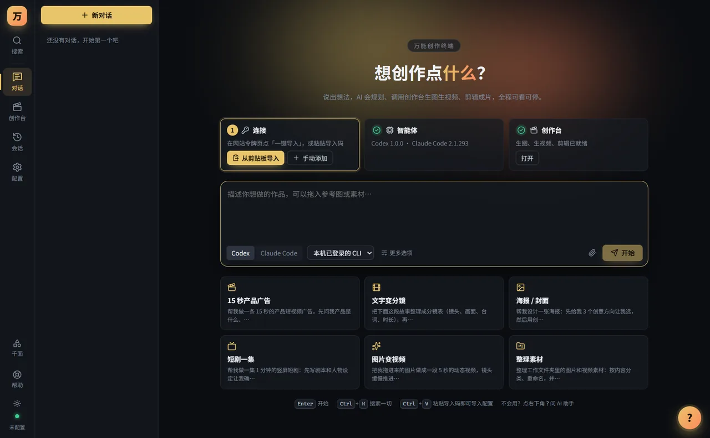
示意图 · 以软件内实际界面为准左侧导航，对话与创作台并排。
左边切页面，中间对话，右边看成果。
驾驶舱和街机是扭蛋解锁的隐藏款；所有界面共用同一份数据，随时切换、随时换回。
下载装好、接上账号或任意兼容 API 站点，说一句话即可看到成品落盘。
在下方选择 Windows 或 macOS 版本。Windows 双击安装无需管理员权限；Mac 拖进「应用程序」，首次打开按 这里的方法 放行一次。浏览器提示「通常不会下载」时，点 … → 保留，看图解。
可以直接注册登录官方账号充值或核销兑换码；也可以连接任意 OpenAI / new-api 兼容站点（支持手动填地址和 Key，或一键导入）。
回到首页输入你的想法，成品自动保存到「作品」和本机目录。点任意一句复制试用：
先用代码做出不花视频费的动态样片，你看完节奏和梗再挑最搭调的风格卡开拍；支持全能多图参考、大批付费前先发确认清单，中途插话立刻优先。
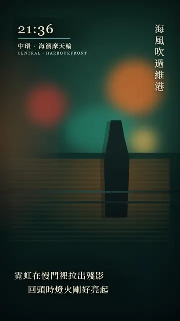
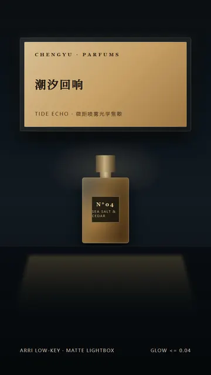


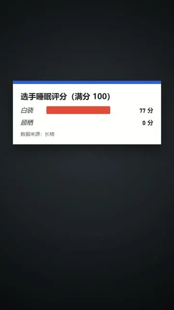


每一项都用一句大白话说清楚能干嘛，再告诉你第一步怎么点、怎么用。


给一个点子，帮你从角色定妆照、场景设定、分镜出图、配音配乐一直做到成片剪辑，内置 30+ 套画风卡。
在输入框上方切到「漫剧总监」，说出故事和想要的画风，按阶段确认设定图和样片即可出片。
把整本小说丢进去，自动拆集立设定、先试拍第 1 集，开启黄金前三集高配，一路做到几十上百集连载。
左侧打开「剧集 / 流水线」，导入小说与总预算，先看第 1 集试拍效果，点头后自动推进全书。
11 张导演风格卡拍广告、MV 和短片：先出免费代码样片看节奏，再用全能多图参考和确认清单稳稳出正式画面。
打开「超级导演」标签，输入故事即可先看免费样片；上方有 27 秒真实合集可直接观看。


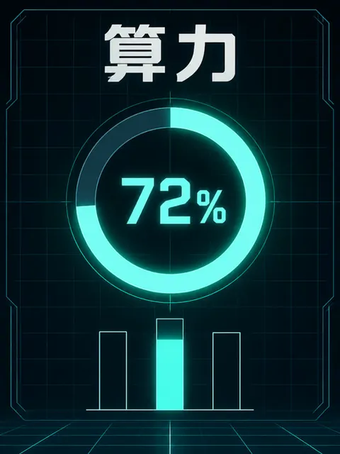
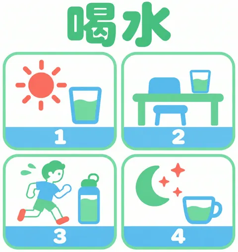
专门搞定海报、封面、中文排版、PS 式精修与定妆照自动清边放大，内置 8 大平面设计风格卡与思源字体一键安装。
需要海报/封面时点「交给制图总监」；任何已生成的图片大图上也能点「交给制图总监精修」，原图不动出新图。
独立「音乐」页直出原创歌曲、主题曲、说唱与器乐分轨，自动附带伴奏、LRC 歌词与 1080p 歌词视频；漫剧配音自动贴合画面口型，不改像素不 P 嘴。
左侧打开「音乐」页，写下曲风、情绪或歌词主题即可一键成曲；配音与配乐也会在出片时自动衔接。
把剧本、角色设定、分镜首帧和视频镜头摆在一张可缩放画布里连线管理，改哪一镜都不影响整条片。
在左侧「创作台 → 画布」新建或由对话自动生成画布，拖拉节点微调单镜，最后点「导出视频」自动混音效配乐。
一次填入多组提示词或参考图，并发批量生图、批量生视频，并原生支持 H3 运镜预设合成，效率成倍提升。
左侧进入「创作台 → 批量造物」，批量粘贴提示词或导入素材，选好画幅与运镜，一键并发出片。
内置 44+ 款本机免扣费音视频与图像处理小工具：一键抠图、换天、超分放大、人像美颜、隐私打码、画面识字、字幕烧录。
点左侧「百宝箱」，选中需要的工具卡片，把图片或视频拖进去、调好简单滑块，本机直接运行不花 API 费。
内置医院导诊、高奢极简、科技产品、门店预约、国风新中式 5 套网站母版（零境外慢源微信秒开），以及带防幻觉护栏的知识库智能客服。
在首页点击「做个漂亮网站」或「做个专属智能客服」，丢进资料或常见问答，先审首屏视觉稿再导出可直接上线的工程。
B站、抖音、YouTube、微博等上千个网站一键下视频或音频；整段分享口令直接丢进来就能解析，难抓的网页还会用内置浏览器嗅探兜底。
直接把视频链接或整段分享口令发到对话里，说「帮我下载这个视频」或「只要音频」，成品自动存进对话的「下载」文件夹。
Codex、Claude Code、Devin、Gemini 等多内核任选，任务跑一半也能随时换内核和模型；多条连接排成号池，额度用完或拥挤时自动接力不中断。0.7.0 起五大内核都支持多账号号池自动换号。
在「配置 → 连接 / 智能体内核」排好顺序并打开「额度接力」，日常干活遇到限流自动切换，恢复后自动切回。
大任务自动拆成清晰的步骤计划卡，待办、进行中、已完成三种状态一眼看清（0.7.0 起所有内核统一）；多件事并行有值班卡，按 Ctrl+Enter 插话立即优先，已做完的成果全保留。
把复杂目标直接发到对话里，先看一眼计划卡确认步骤；过程中随时补充要求，它会带着已有文件顺着改。
内置风格卡一览 · 漫剧总监与制图总监可直接套用


既能单人轻量对话，也能组建多角色 AI 团队、跨电脑局域网协作，还能按习惯随时切换 10 套界面，或者干脆开口说。
说一句业务目标，自动规划总监、编剧、画师、剪辑等岗位分工并建好群聊；在像素与 3D 工作室里实时看到每位伙伴在忙什么，同主题对话自动归档为项目。
按 F2 随时在经典、一句话、对话、磁贴、口袋、桌面、终端（以及扭蛋解锁的驾驶舱、街机）和 0.7.0 新增的「二次元·痛窗」之间切换，全部数据共用。看 10 套界面 →
不想打字就直接说：切页面、开画布、发起批量造物、换界面，都可以用语音指挥。桌面陪伴助手常驻桌面随叫随到，离线和在线两种自然语音连聊都支持；不用语音时，照常打字即可。
软件本身不捆绑特定站点。既可直接登录官方账号，也能接入你自选的任意 OpenAI / new-api 兼容站点。
适合所有兼容站点：填一次接口地址和 Key，再选好文本、生图、视频三个默认模型即可。
https://你的站点域名/v1。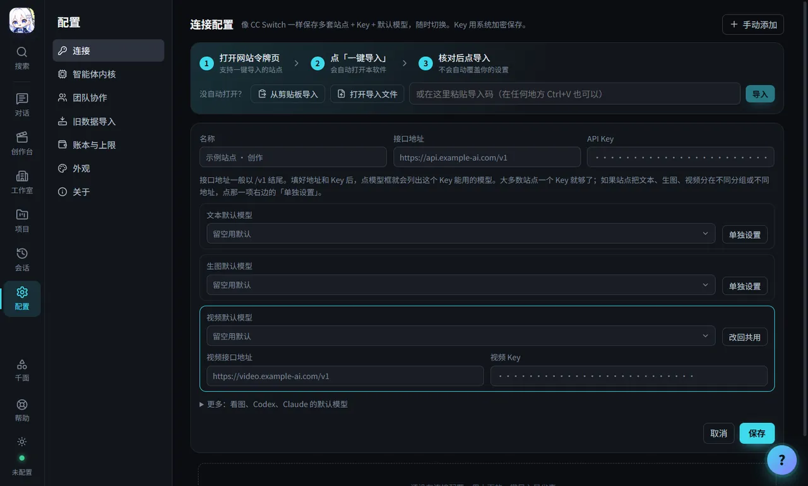
不确定选哪个模型？文本选站点推荐的对话模型，生图选带 image 字样，视频选标注为视频的模型。
智能 Key 自动挑选健康线路；点一下「一键导入」，文本、生图、视频和编程助手模型一次配好。
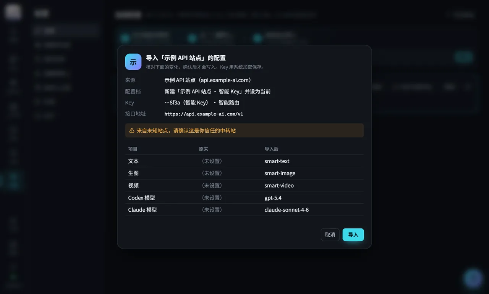
确认前不会改动任何现有设置；导错了可在「配置 → 连接」撤销。详看 通用版使用手册 ↗ 与 智能路由站接入手册 ↗。
分章节新手教程与 80 秒宣传片，点任意章节直接跳到那一段。
一条视频讲完下载安装、连接站点、对话出图出视频、创作台、千面界面、更新与卸载。
一句话出图、出视频、剪成片，连接任意兼容 OpenAI 的站点即可开工。
桌面陪伴助手与自然语音连聊、全软件语音直控、千面第 10 套界面、五内核多账号号池、全内核三态进度计划卡。
桌面陪伴助手常驻桌面、随叫随到；离线和在线两种语音都支持自然连聊，像和朋友说话一样一句接一句，不用每次都点按钮。
不只是语音输入：切页面、开画布、发起批量造物、换界面，都可以直接说，软件听懂后替你点到位。
高自由度的二次元界面：角色立绘和布局都可以按自己的喜好定制，数据与其余 9 套界面共用，按 F2 随时切换。
五大内核都能配置多账号号池：一个账号额度用完或被限流时自动换下一个，带着原对话上下文续跑，做好的成品不重做。
不管用哪个内核，任务都用同一种计划卡展示进度：待办、进行中、已完成三种状态一眼看清，做到哪一步不用猜。
画布、批量造物、百宝箱继续作为创作台三大主页；音乐创作接入 DiffSinger，原创歌曲的歌声可以在本机合成。
左侧导航直接打开无限画布、批量造物（多提示词并发出图出视频、H3 原生运镜合成）与百宝箱（44+ 款本机免扣费音视频处理、抠图超分、字幕烧录即填即跑）。
独立「音乐」页支持写词谱曲、主题曲、说唱与器乐分轨，本机直出母带、伴奏、LRC 歌词与 1080p 歌词字幕样片；漫剧与成片配音自动贴合画面开口包络，全程不改像素不 P 嘴。
登录官方账号即可一处充值、兑换码核销并打通对话、生图、生视频与在线高清配音，无需单独填配音 Key；智能路由升级为首选软偏好，繁忙时自动回退健康线路。
漫剧总监与超级导演新增两张实战风格卡；超级导演开局可选「先不选风格卡」，等免费代码样片拍板时再推荐 2–3 张最搭调的风格卡敲定开拍。
超级导演拥有独立标签与关闭按钮；默认全能多图参考让人物场景更稳、动作更放得开；每批付费生成前先发确认清单，多任务带值班卡，中途插话立即优先。
首页新增「做个漂亮网站」（5 套母版、零境外慢源微信秒开）与「做个专属智能客服」（防幻觉护栏、密钥严留服务端）；网页视频下载支持整段分享口令提取与内置浏览器流嗅探兜底。
长篇连载支持先试拍第 1 集看人物和节奏再跑全书；可开启「黄金前 N 集高配」立住开篇留存，后续集数自动切回省钱或均衡档控住总预算。
强、标准、日常档默认升级至 6.2 等新一代模型；修复文档状态识别与长对话衔接细节，跨整点刷新令牌时自动重连续跑。
当前版本 v0.7.0 · 免费下载安装，支持 Windows 10/11（64 位）与 macOS 13 及以上。
这是内测版安装包还没有购买代码签名时的常规提示，不代表文件有问题。想更放心，可以用下载卡片上的 SHA256 核对文件。
1点浏览器右上角的下载图标，会看到「通常不会下载」的提示。
2把鼠标移到这一行，点右边的 …（更多操作）。
3在菜单里点 保留。Edge 再确认一次时，点「显示更多 → 仍然保留」。
4双击安装包；出现蓝色窗口时，先点 更多信息，再点 仍要运行。
1打开 dmg，把 OmniCreator 拖进「应用程序」。
2双击打开一次，看到提示后点「完成」。
3到「系统设置 → 隐私与安全性」点 仍要打开；macOS 13 / 14 也可以在「应用程序」里右键 →「打开」。
不同浏览器和版本的按钮文字略有不同：「保留」也可能写作 Keep、保存或「仍然保留」。更详细的说明见下方 Windows 第一次打开 与 Mac 首次打开。
历史版本与完整校验清单见 GitHub 发布页 ↗，下载缓慢也可在 QQ 群 1131210592 获取群文件。
首次打开放行步骤、温和的自动更新机制，以及可保留数据的干净卸载流程。
内测版尚未购买代码签名，出现蓝色窗口「Windows 已保护你的电脑」时：
浏览器在下载时就拦住了？看上面的 「保留」图解。
Get-FileHash .\文件名.exe -Algorithm SHA256若提示「已损坏」，在终端运行以下一行后再打开：
sudo xattr -dr com.apple.quarantine /Applications/OmniCreator.app启动 1 分钟后检查一次新版，之后每 6 小时一次。支持 立即更新、稍后、跳过此版本，下载支持断点续传并校验 SHA256，升级保留全部设置和对话。

在软件打开「配置 → 关于」点「卸载本软件」，或在 Windows「设置 → 应用」里找到「万能创作终端」卸载。卸载前会先关闭后台进程，并询问是否删除你的数据（默认保留）。
若需清理配置与记录，先在「配置 → 关于」点「清除软件数据」，然后删除免安装版的 .exe 文件即可。
退出软件后，把「应用程序」里的 OmniCreator 拖到废纸篓。如需彻底清除数据，在访达前往并删除 ~/Library/Application Support/万能创作终端。
复制下面这段话，发给 Codex、Claude Code 或任何能运行命令的 AI 助手。它会自动下载、校验 SHA256、安装并打开软件。
Agent 会先核对 SHA256 校验值，不一致立刻停下，绝不会向你索要任何 Key 或密码。
正在准备安装口令……
从 0.6.8 起，原通用版与 TideVerse 版合并为统一的「万能创作终端」中性版。老 TideVerse 用户的更新源继续保留，从 TideVerse 版升级会自动接着用原来的记录（对话和配置），不用导入。
下载、安装和个人使用软件完全免费。内置 44+ 百宝箱本地工具不花 API 费；调用云端对话、生图、生视频模型时，按你登录的账号或所连接 API 站点的实际用量计费，软件内置账本与消费上限。
你可以直接在软件里注册登录官方账号并充值 / 核销兑换码使用，也可以连接任意兼容 OpenAI / new-api 接口的第三方站点（支持手动填地址和 Key，或支持智能路由站点的一键导入）。
这是内测版安装包还没有代码签名时浏览器的常规提示。在下载气泡里点「…」→「保留」（有的版本写作 Keep、保存或「仍然保留」）就能留下文件；随后 Windows 弹出蓝色窗口时点「更多信息 → 仍要运行」。想更放心，可以用下载卡片上的 SHA256 核对文件。看图解步骤。
0.7.0 起可以直接开口指挥软件：切页面、开画布、发起创作都能说；桌面陪伴助手常驻桌面，支持离线与在线两种自然语音连聊。不想用语音时，照常打字即可，原有用法都不变。
一般一个 Key 就够，填一次全部共用。如果站点把文本、生图、视频分在不同分组，或你想分开看花费，可以在连接表单里给对应项点「单独设置」。
不用提前装。Windows 安装版内置 Codex；免安装版和 Mac 版缺少时，在「配置 → 智能体内核」点「一键安装 Codex」即可，装在软件自己的目录里，不改你电脑原有配置。
常见于免安装版或浏览器拦截。可在站点弹窗里复制导入码，回软件按 Ctrl+V（Mac 上 ⌘+V）；或下载导入文件，在「配置 → 连接」点「打开导入文件」。导入链接通常 10 分钟内有效、单次可用。
Key 用系统自带加密（Windows DPAPI / macOS 钥匙串）保存在本机，不会上传。每个对话有独立的成果文件夹，在右侧「作品」栏点击即可「在文件夹中显示」。
绝不强制更新。有新版时左下角提示，可选「立即更新」「稍后」或「跳过此版本」，下载校验 SHA256，更新保留全部设置和对话。
本站纯静态、兼容 config.json 规范与 check-site.mjs 自动化检查。只需修改 config.json 中的 partner 字段并同步生成 config-fallback.js，详见 合作方托管说明。
个人使用免费；公司、学校等机构使用需获得授权。软件内按 F1 可随时问帮助助手，也可以加入 QQ 群 1131210592 或前往 GitHub Issues 附带版本号反馈。